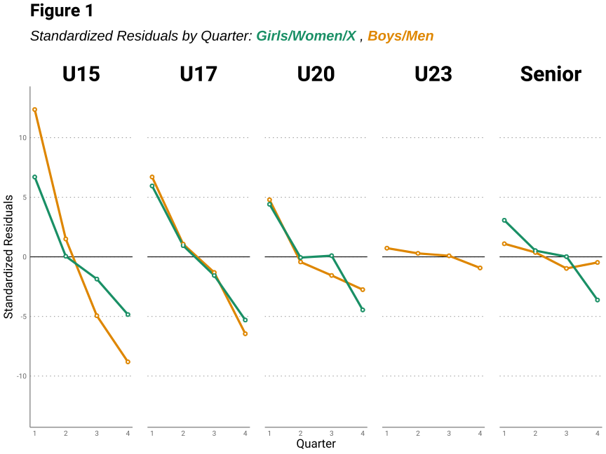

| Table 1 | ||
| Summary of Program Samples | ||
| Program | n | Period |
|---|---|---|
| U15 Boys | 685 | 1997-2022 |
| U15 Girls | 213 | 2004-2022 |
| U17 Boys | 542 | 1990-2022 |
| U17 Girls | 423 | 2000-2022 |
| U20 Men | 709 | 1973-2022 |
| U20 Women | 294 | 2002-2022 |
| U23 Men | 330 | 1990-2022 |
| Senior Men1 | 366 | 1986-2022 |
| Senior Women/X | 247 | 1986-2022 |
| 1 Excludes period before 1986. | ||
1 Introduction
The Relative Age Effect (RAE) is a commonly observed phenomenon within different sports whereby individuals born earlier in a selection period are overrepresented within their cohort, whilst those born later relative to their peers are underrepresented (Cobley et al., 2009). The RAE constitutes a complex selection bias, as a result of confounding sporting ability and potential with a host of chronological age related factors in the physical (Müller et al., 2018), cognitive (Jakobsson et al., 2021) and socio-emotional (Thompson et al., 2004) domains of maturation.
The RAE has been observed across different playing levels of soccer from youth academies (Jackson & Comber, 2020) to professional tiers (Götze & Hoppe, 2021), with the magnitude of the effect usually larger in younger cohorts (Pedersen et al., 2022). Moreover, it appears that the RAE may be more pronounced in male players (Smith et al., 2018), whilst studies involving the RAE within the context of female sports are less prevalent and conclusions are often mixed (Cobley et al., 2009). For example, Korgaokar et al. (2018) found RAE within their sample of female players, whereas Andrew et al. (2022) were unable to consistently demonstrate this effect in their study.
The aim of the present study was to examine the prevalence of the RAE in players historically selected for Canada Soccer national team programs, including training camps, across playing levels and gender. It was hypothesized that the RAE would be present in the U15, U17 and U20 programs, but not in the U23 or senior levels. It was also hypothesized that the magnitude of the effect would be largest in the youngest level (U15) and it would be more pronounced in the male programs compared to the female programs.
2 Methods
2.1 Sample
An apriori analysis using G*Power version 3.1.9.7 (Faul et al., 2007) was used for sample size estimation. Using 95% power for detecting a medium effect (Cohen’s \omega= .3), at a significance criterion of α = .05, the required minimum sample size for a Chi-Square goodness-of-fit analysis is 191.
Players that were selected for a Canada Soccer national team program training camp or official competition roster for which birth month data was available were included in the sample. Including participants who were selected for training camps as well as competitions allowed for an increased sample size. This information was obtained from Canada Soccer (2022), FIFA (2022) and CONCACAF (2022). The final sample includes 3809 players from 9 national team programs (see Table 1). The senior Men’s national team program data included was from 1986 to 2022 only. Although information was available beginning from 1885 for this specific program, the period preceding 1986 was excluded from the current analysis, mainly for ease of comparison between the senior Men’s and senior Women/X’s programs. There was no U23 Women’s program, as such, the U23 Men’s program is the only one included for this age group.
2.2 Relative Age Classification
The birth month of each player was categorized into quartiles. The quartiles were defined by using a January 1st cut-off date. The year was divided into the following four quarters: Quarter 1 = January, February, March; Quarter 2 = April, May, June; Quarter 3 = July, August, September; Quarter 4 = October, November, December.
2.3 Statistical Analysis
Chi-Square (\chi^2) goodness-of-fit tests were used to compare the observed and expected birth month quarter distributions (Equation 1).
\chi^2 = \sum \frac {(O - E)^2}{E} \tag{1}
O = observed value
E = expected value
Statistical significance criterion was set at p < 0.05. Effect sizes for the Chi-Square tests reaching significance were calculated with Cohen’s \omega, with strength of the effect interpreted as small = 0.1, medium = 0.3 and large = 0.5 (Cohen, 1992). The expected birth month and quarter distributions were calculated from the reference population of births in Canada obtained from Statistics Canada (2022). The population birthdate quartile percentages were 24.05 (Quater 1), 25.67 (Quarter 2), 26.27 (Quarter 3) and 24.01 (Quarter 4) respectively.
Post-hoc analyses were conducted by calculating standardized residuals and Odds Ratios (ORs) (Sharpe, 2015). ORs with 95% confidence intervals (CI) were calculated to compare Quarter 1 to Quarter 4 (Equation 2).
a = observed value group 1
b = observed value group 2
c = expected value group 1
d = expected value group 2
Statistical analyses were performed using R Statistical Software version 4.2.2 (Mangiafico, 2023; R Core Team, 2022). Tables were produced with the gt (Iannone et al., 2022) and gtExtras (Mock, 2022) packages. Figures were produced with the ggplot2 (Wickham, 2016), showtext (Qiu, 2022) and ggtext (Wilke & Wiernik, 2022) packages.
3 Results
The frequency and percentage distributions of the players’ birth quartiles for each program category are presented in Table 2.
| Table 2 | |||||
| Birth Month Quartile Distribution by Program | |||||
| Program | n | Birth Quarter Frequencies (%) | |||
|---|---|---|---|---|---|
| Quarter 1 | Quarter 2 | Quarter 3 | Quarter 4 | ||
| U15 Boys | 685 | 303 (44.23) | 193 (28.18) | 123 (17.96) | 66 (9.63) |
| U15 Girls | 213 | 93 (43.66) | 55 (25.82) | 44 (20.66) | 21 (9.86) |
| U17 Boys | 542 | 197 (36.35) | 150 (27.67) | 129 (23.80) | 66 (12.18) |
| U17 Girls | 423 | 154 (36.41) | 117 (27.66) | 97 (22.93) | 55 (13.00) |
| U20 Men | 709 | 225 (31.73) | 177 (24.96) | 168 (23.70) | 139 (19.61) |
| U20 Women | 294 | 103 (35.03) | 75 (25.51) | 78 (26.53) | 38 (12.93) |
| U23 Men | 330 | 85 (25.76) | 87 (26.36) | 86 (26.06) | 72 (21.82) |
| Senior Men | 366 | 97 (26.50) | 97 (26.50) | 88 (24.04) | 84 (22.95) |
| Senior Women/X | 247 | 80 (32.39) | 67 (27.13) | 65 (26.32) | 35 (14.17) |
Chi-Square goodness-of-fit results are presented in Table 3. A statistically significant RAE for all U15, U17 and U20 programs was present, indicating that the observed birth quarter distribution was different from the expected birth quarter distribution. The magnitude of the effect for both U15 programs may be considered large. The magnitude of the effect for both U17 programs may be considered medium. The magnitude of the effect for the U20 Men’s program may be considered small, whilst it may be considered medium for the U20 Women’s program.
The Senior Women/X’s program demonstrated a statistically significant RAE, indicating that the observed birth quarter distribution was different from the expected birth quarter distribution. The magnitude of the effect for the Senior Women/X may be considered small, but approaching medium.
However, the U23 Men’s and Senior Men’s programs did not reach statistical significance, as the observed birth quarter distribution was not different from the expected birth quarter distribution.
| Table 3 | |||||||
| Chi-Square Goodness-of-fit Results | |||||||
| Program | χ2(3) | p value | Cohen's ω | Standardized Residuals | |||
|---|---|---|---|---|---|---|---|
| Q1 | Q2 | Q3 | Q4 | ||||
| U15 Boys | 194.68 | 0.00* | 0.53 | 12.36 | 1.50 | -4.94 | -8.81 |
| U15 Girls | 54.39 | 0.00* | 0.51 | 6.70 | 0.05 | -1.86 | -4.84 |
| U17 Boys | 67.79 | 0.00* | 0.35 | 6.70 | 1.07 | -1.31 | -6.45 |
| U17 Girls | 50.65 | 0.00* | 0.35 | 5.95 | 0.94 | -1.56 | -5.30 |
| U20 Men | 25.07 | 0.00* | 0.19 | 4.79 | -0.43 | -1.56 | -2.75 |
| U20 Women | 29.81 | 0.00* | 0.32 | 4.41 | -0.06 | 0.10 | -4.45 |
| U23 Men | 1.13 | 0.77 | - | 0.73 | 0.29 | -0.09 | -0.93 |
| Senior Men | 1.88 | 0.60 | - | 1.10 | 0.37 | -0.97 | -0.47 |
| Senior Women/X | 17.31 | 0.00* | 0.27 | 3.07 | 0.52 | 0.02 | -3.62 |
| *α <0.05 | |||||||
The reported effect sizes decreased in magnitude as the age associated with each program increased. The effect size was marginally larger for the U15 Boys’ program when compared to the U15 Girls’ program. Both U17 programs had an equal effect size, whilst the U20 Men’s program effect size was smaller than that of the U20 Women’s program.
Post-hoc analysis of the standardized residuals are represented in Figure 1.

Odds Ratio (OR) results comparing Quarter 1 to Quarter 4 are presented in Table 4. ORs for each group were statistically significant except for the U23 Men’s and Senior Men’s programs.
| Table 4 | ||
| Odds Ratio (OR) Results for Q1 vs. Q4 | ||
| Program | OR [95% CI] | |
|---|---|---|
| U15 Boys | 4.55 [3.20-6.54]* | |
| U15 Girls | 4.40 [2.31-8.61]* | |
| U17 Boys | 2.98 [2.03-4.40]* | |
| U17 Girl | 2.79 [1.82-4.33]* | |
| U20 Men | 1.61 [1.18-2.20]* | |
| U20 Women | 2.70 [1.60-4.60]* | |
| U23 Men | 1.20 [0.74-1.88] | |
| Senior Men | 1.15 [0.75-1.79] | |
| Senior Women/X | 2.28 [1.29-4.06]* | |
| Confidence Interval (CI), Quarter (Q) | ||
| * α <0.05 | ||
| Reference line | = OR 1.0 | ||
4 Discussion
The present study investigated the RAE prevalence in players historically selected for Canada Soccer national team programs including training camps. The main findings are: (1) The RAE was present within both U15, U17 and U20 programs of the sample; (2) The RAE was present within the Senior Women/X’s program but not within the Senior Men’s or U23 Men’s programs of the sample; (3) The magnitude of the effect sizes decreased with an increase in age of the program samples; (4) The effect sizes for both U15 programs were similar in magnitude; (5) The effect sizes for both U17 programs were also similar in magnitude; (6) The effect size for the U20 Women’s program was stronger than that of the U20 Men’s program.
The current study’s findings for the male programs are in line with several other studies which indicate that the RAE is a common occurrence in these categories worldwide and tends to decrease with an increase in age (Brustio et al., 2018; Lupo et al., 2019). Additionally, the absence of a significant RAE in the Senior Men’s program of the study’s sample is consistent with other past findings (Andrew et al., 2022; Götze & Hoppe, 2021).
However, for the Girls’ and Women/X’s programs, the current study’s results that show persistent and significant RAE across all categories are only partially consistent with previous literature (Delorme et al., 2009; Götze & Hoppe, 2021; Simon et al., 2022). For example, Barreira et al. (2021) failed to establish the presence of a RAE in a sample of women’s national team players participating in the Olympic games from 1996 through 2016. However, Sedano et al. (2015) demonstrated a significant RAE among Spanish players at different playing levels including the national team. The current study’s results are also in line with those of Korgaokar et al. (2018) who found consistent RAE within their sample of girls competing at different levels in the USA, with effect sizes decreasing with an increase in age.
One surprising finding from the current study is the stronger presence of RAE within the U20 Women’s program compared to the U20 Men’s. This is an unusual pattern that is not consistent with what is typically reported in the current literature (Baker et al., 2009).
There is evidence to suggest that the RAE may be influenced by region specific variables (Romann & Fuchslocher, 2013). As the RAE is theorized by some to be typically stronger in sports that are the more popular (Cobley et al., 2009; Smith et al., 2018), it is possible that the RAE may be most present in countries where soccer participation for girls and women is higher (Korgaokar et al., 2018; Simon et al., 2022). However, the manifestation of the RAE is likely a non-linear interaction of multiple moderating variables (Baker et al., 2009; Schorer et al., 2015).
Canada represents a competitive landscape for girls’ and women’s soccer, with over 200 000 registered female players (Canada Soccer Association, 2022; FIFA, 2019). In spite of that, Canada represents one of the only top ranked FIFA nations without a currently active domestic professional women’s league. It could be hypothesized that this unique regional condition may be favourable to promoting and sustaining the RAE. With limited opportunities relative to the size of the player pool available, perhaps causing participation rates to exceed the established infrastructure, inequalities such as the RAE could become more pervasive and sustained over time. This supposition could possibly explain the results of the U20 categories as this age group is a crucial time for professional development. However, this is purely speculative from the author’s part and requires further investigation.
Research on the RAE in soccer is not new (Helsen et al., 2012), however, Pedersen et al. (2022) suggest that the RAE has grown stronger over time with the effect being increasingly present in more recent major tournaments. Since research on women’s soccer is growing exponentially, investigating the RAE within the girls’ and women’s soccer context remains relevant, as the literature remains far behind the depth of the boys’ and men’s game (Okholm Kryger et al., 2021). The importance of this area of research should be emphasized, as even when direct efforts are made to mitigate the RAE, it may still persist (Lagestad et al., 2018).
4.1 Limitations
This study is not without limitations. Firstly, the present study did not include physical, cognitive or psychosocial data. Therefore, assumptions about potential advantages in these areas of maturation for early born players cannot be confirmed in the current sample.
Secondly, birth months were used to determine birth quarter distributions. This method has limitations as players born on January 1st and March 31st are considered as equivalent. Other statistical methods such as Poisson regression techniques could potentially be considered more appropriate and effective in this context (Doyle & Bottomley, 2019).
Finally, it should also be cautioned that in some instances, the samples for different programs included different time periods. It is possible that differences in the prevalence of the RAE exist dependent on the time period analysed and comparisons across different periods may limit the reliability of conclusions.
5 Conclusions
The current study demonstrates the presence of the RAE within players historically selected for Canada Soccer national team programs with the exception of the Men’s U23 and Men’s Senior programs. The prevalence and overall strength of the effects observed among the Girls’ and Women/X’s programs is particularly worrisome. To the author’s knowledge, this is the first study to identify widespread patterns of the RAE across different Canada Soccer national team programs. Future studies should focus on underlying causes of the RAE with gender and region specific considerations. When validity of possible interventions is established, recommendations for best practices should be made to relevant practitioners.
6 Supplementary Infographic

About the author
Christina is a football (soccer) data analyst. To get in touch: 6ysblog@gmail.com
7 References
Andrew, M., Finnegan, L., Datson, N., & Dugdale, J. H. (2022). Men are from quartile one, women are from? Relative Age Effect in European soccer and the influence of age, success, and playing status. Children, 9(11), 1747. https://doi.org/10.3390/children9111747
Baker, J., Schorer, J., Cobley, S., Bräutigam, H., & Büsch, D. (2009). Gender, depth of competition and relative age effects in team sports. Asian Journal of Exercise & Sports Science, 6(1).
Barreira, J., Bueno, B., & Chiminazzo, J. G. C. (2021). Relative age effect and age of peak performance: An analysis of women’s football players in the olympic games (1996-2016). Motriz: Revista de Educação Física, 27. https://doi.org/10.1590/s1980-65742021006921
Brustio, P. R., Lupo, C., Ungureanu, A. N., Frati, R., Rainoldi, A., & Boccia, G. (2018). The relative age effect is larger in Italian soccer top-level youth categories and smaller in Serie A. PLOS ONE, 13(4), e0196253. https://doi.org/10.1371/journal.pone.0196253
Canada Soccer. (2022). www.canadasoccer.com
Canada Soccer Association. (2022). 2021 annual report. https://www.canadasoccer.com/wp-content/uploads/2022/05/2021-AnnualReport-Web-EN.pdf.
Cobley, S., Baker, J., Wattie, N., & McKenna, J. (2009). Annual age-grouping and athlete development: A meta-analytical review of relative age effects in sport. Sports Medicine (Auckland, N.Z.), 39, 235–256.
Cohen, J. (1992). A power primer. Psychological Bulletin, 112(1), 155–159. https://doi.org/10.1037/0033-2909.112.1.155
CONCACAF. (2022). www.concacaf.com
Delorme, N., Boiché, J., & Raspaud, M. (2009). Relative age effect in female sport: a diachronic examination of soccer players. Scandinavian Journal of Medicine & Science in Sports, 20(3), 509–515. https://doi.org/10.1111/j.1600-0838.2009.00979.x
Doyle, J. R., & Bottomley, P. A. (2019). The relative age effect in European elite soccer: A practical guide to Poisson regression modelling. PLOS ONE, 14(4), e0213988. https://doi.org/10.1371/journal.pone.0213988
Faul, F., Erdfelder, E., Lang, A.-G., & Buchner, A. (2007). G*Power 3: A flexible statistical power analysis program for the social, behavioral, and biomedical sciences. Behavior Research Methods, 39(2), 175–191. https://doi.org/10.3758/bf03193146
FIFA. (2019). Women’s football member associations survey report 2019. https://digitalhub.fifa.com/m/231330ded0bf3120/original/nq3ensohyxpuxovcovj0-pdf.pdf.
FIFA. (2022). www.fifa.com
Götze, M., & Hoppe, M. W. (2021). Relative age effect in elite german soccer: Influence of gender and competition level. Frontiers in Psychology, 11. https://doi.org/10.3389/fpsyg.2020.587023
Helsen, W. F., Baker, J., Michiels, S., Schorer, J., Van winckel, J., & Williams, A. M. (2012). The relative age effect in European professional soccer: Did ten years of research make any difference? Journal of Sports Sciences, 30(15), 1665–1671. https://doi.org/10.1080/02640414.2012.721929
Iannone, R., Cheng, J., Schloerke, B., Hughes, E., & Seo, J. (2022). Gt: Easily create presentation-ready display tables. https://CRAN.R-project.org/package=gt
Jackson, R. C., & Comber, G. (2020). Hill on a mountaintop: A longitudinal and cross-sectional analysis of The Relative Age Effect in competitive youth football. Journal of Sports Sciences, 38(11-12), 1352–1358. https://doi.org/10.1080/02640414.2019.1706830
Jakobsson, J., Julin, A. L., Persson, G., & Malm, C. (2021). Darwinian selection discriminates young athletes: The Relative Age Effect in relation to sporting performance. Sports Medicine - Open, 7(1). https://doi.org/10.1186/s40798-021-00300-2
Korgaokar, A. D., Farley, R. S., Fuller, D. K., & Caputo, J. L. (2018). Relative age effect among elite youth female soccer players across the united states. Sport Mont, 16(3), 37–41. https://doi.org/10.26773/smj.181007
Lagestad, P., Steen, I., & Dalen, T. (2018). Inevitable Relative Age Effects in different stages of the selection process among male and female youth soccer players. Sports, 6(2), 29. https://doi.org/10.3390/sports6020029
Lupo, C., Boccia, G., Ungureanu, A. N., Frati, R., Marocco, R., & Brustio, P. R. (2019). The beginning of senior career in team sport is affected by relative age effect. Frontiers in Psychology, 10. https://doi.org/10.3389/fpsyg.2019.01465
Mangiafico, S. S. (2023). rcompanion: Functions to support extension education program evaluation. Rutgers Cooperative Extension. https://CRAN.R-project.org/package=rcompanion/
Mock, T. (2022). gtExtras: Extending ’gt’ for beautiful HTML tables. https://CRAN.R-project.org/package=gtExtras
Müller, L., Gehmaier, J., Gonaus, C., Raschner, C., & Müller, E. (2018). Maturity status strongly influences the relative age effect in international elite under-9 soccer. Journal of Sports Science & Medicine, 17(2), 216.
Okholm Kryger, K., Wang, A., Mehta, R., Impellizzeri, F. M., Massey, A., & McCall, A. (2021). Research on women’s football: A scoping review. Science and Medicine in Football, 6(5), 549–558. https://doi.org/10.1080/24733938.2020.1868560
Pedersen, A. V., Aune, T. K., Dalen, T., & Lorås, H. (2022). Variations in The Relative Age Effect with age and sex, and over time: Elite-level data from international soccer World Cups. PLOS ONE, 17(4), e0264813. https://doi.org/10.1371/journal.pone.0264813
Qiu, Y. (2022). Showtext: Using fonts more easily in r graphs. https://CRAN.R-project.org/package=showtext
R Core Team. (2022). R: A language and environment for statistical computing. R Foundation for Statistical Computing. https://www.R-project.org/
Romann, M., & Fuchslocher, J. (2013). Influences of player nationality, playing position, and height on relative age effects at women’s under-17 FIFA World Cup. Journal of Sports Sciences, 31(1), 32–40. https://doi.org/10.1080/02640414.2012.718442
Schorer, J., Cobley, S. P., Brautigam, H., Loffing, F., Hütter, S., Büsch, D., Wattie, N., Helsen, W. F., & Baker, J. (2015). Developmental contexts, depth of competition and relative age effects in sport: A database analysis and a quasi- experiment. Psychological Test and Assessment Modeling, 57, 126–143.
Sedano, S., Vaeyens, R., & Redondo, J. C. (2015). The Relative Age Effect in Spanish Female Soccer Players. Influence of the Competitive Level and a Playing Position. Journal of Human Kinetics, 46(1), 129–137. https://doi.org/10.1515/hukin-2015-0041
Sharpe, D. M. (2015). Your chi-square test is statistically significant: Now what? Practical Assessment, Research and Evaluation, 20(8), 1–10.
Simon, C., Carson, F., Faber, I. R., & Hülsdünker, T. (2022). Low prevalence of relative age effects in Luxembourg’s male and female youth football. PLOS ONE, 17(8), e0273019. https://doi.org/10.1371/journal.pone.0273019
Smith, K. L., Weir, P. L., Till, K., Romann, M., & Cobley, S. (2018). Relative Age Effects across and within female sport contexts: A systematic review and meta-analysis. Sports Medicine, 48(6), 1451–1478. https://doi.org/10.1007/s40279-018-0890-8
Statistics Canada. (2022). Live births, by month. Government of Canada. https://doi.org/10.25318/1310041501-ENG
Thompson, A., Barnsley, R., & Battle, J. (2004). The relative age effect and the development of self-esteem. Educational Research - EDUC RES, 46. https://doi.org/10.1080/0013188042000277368
Wickham, H. (2016). ggplot2: Elegant graphics for data analysis. https://ggplot2.tidyverse.org
Wilke, C. O., & Wiernik, B. M. (2022). Ggtext: Improved text rendering support for ’ggplot2’. https://CRAN.R-project.org/package=ggtext